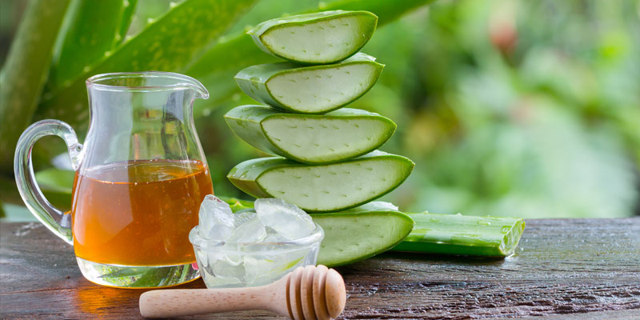

El agave, conocido también como maguey, pita, cabuya o mezcal, está frecuentemente asociado al alcohol que se destila de él, tequila y mezcal, aunque también puede conseguirse bebidas no alcohólicas como el pulque. En realidad Agave es el nombre de un género de plantas suculentas, de las que no todas dan alcohol.
Una de las características más llamativas son sus hojas suculentas (o crasas) de buen grosor adaptadas para almacenar agua en climas de pocas precipitaciones de los que son originarias. Su tallo leñoso es muy corto por lo que las hojas forman una roseta basal de hojas largas y carnosas que presentan en ocasiones espinas en el margen siendo lo más común que acabe con una aguja en el ápice. Las hojas no presentan una nerviación clara.
Su crecimiento es muy lento alcanzando la madurez sexual tras unos 10 años, siendo posible que necesiten hasta 30 años para madurar. El cuerpo fructífero sale del centro de la roseta llegando hasta más de diez metros de altura, del que salen varias flores verdaderas en grupos de inflorescencias espigada o paniculada. El fruto se dispersa de forma aérea mediante tres alas. Una vez florecido y las semillas maduras los agaves mueren, aunque suelen rebrotar de la base.
Además del tequila, ¿qué otros usos tiene?
Uno de los usos más difundidos que se le ha dado al agave es dentro de la rama de los endulzantes, intentando sustituir otros azúcares que son dañinos para la salud. Es común ver mieles de agave que pretenden usarse en el mercado como azúcares más sanos que los refinados de la caña, por ejemplo.
Este néctar de agave sí viene del mismo agave que produce el tequila (Agave azul o tequiliana) pero está altamente procesado y es casi dos veces más dulce que el azúcar regular. Tiene 60 calorías por cucharada en comparación con las 40 que tiene la misma cantidad de azúcar normal. O sea que o usas muy poco o no será un buen suplemento (ni más saludable) para endulzar los alimentos.
Como planta medicinal.
Según un estudio que se publicó en la prensa mexicana en 2007, un grupo de químicos de la Universidad de Guadalajara descubrió que algunos compuestos que se derivan del agave azul son una forma más natural para que ciertos medicamentos lleguen hasta el colon.
Muchos medicamentos se desintegran en el estómago por los fuertes ácidos y no llegan al intestino, donde se espera que se absorban. Así que la idea es que haya un portador que resista estos ácidos y lleve la medicina hasta el colon, cosa que no había sido fácil encontrar.
Dentro de los compuestos del tequila, o de la fruta del agave azul, hay polisacáridos (o polímeros de la fructosa) que se llaman fructans, estos son capaces de resistir la destrucción en el estómago y llevar medicamentos intactos al colon, donde serían absorbidos y entonces podrían contribuir a los tratamientos para el síndrome del colon irritable, la colitis ulcerativa e incluso al cáncer.
Por otra parte, un reporte en Medscape se refiere a la miel de agave como un buen remedio para la tos en los niños muy pequeños (generalmente menores a un año) y aunque en realidad lo usan como un placebo porque no han corroborado bien si en verdad tiene efectos medicinales en este grupo, es mejor que nada, según los expertos en la publicación JAMA Pediatrics. Aseguran que no tienen ningún otro tratamiento para combatir estos síntomas en los bebés y en los niños muy pequeños que sean una verdadera alternativa para reducir el uso innecesario de los antibióticos.
 Miel de agave.Más beneficios del agave.
Es eficaz para tratar afecciones como ulceras, problemas digestivos y hepáticos, estreñimiento, ictericia, heridas y lesiones en la piel, reumatismo, diarreas crónicas, combate los parásitos, ayuda a regular el apetito por lo que favorece la pérdida de peso. Además el agave ayuda a prevenir ciertas enfermedades como obesidad, diabetes, cáncer de colon y osteoporosis.
Contiene en forma natural prebióticos que evitan la propagación de bacterias perjudiciales para el sistema digestivo e intestinal que luego pueden generar enfermedades. Para aprovechar los beneficios medicinales del agave se puede usar el jugo fresco de las hojas en heridas en forma externa como compresas.
Contraindicaciones del agave. Uno de los cuidados a tener es con la especie, en especial con el agave americano que contiene sustancias en su interior que pueden causar dermatitis. Esto sobre todo si su uso va a ser tópico o tener mucho cuidado al manejarlo. Al ser refinado puede llegar a perder sus propiedades, como puede ocasionar una intoxicación.